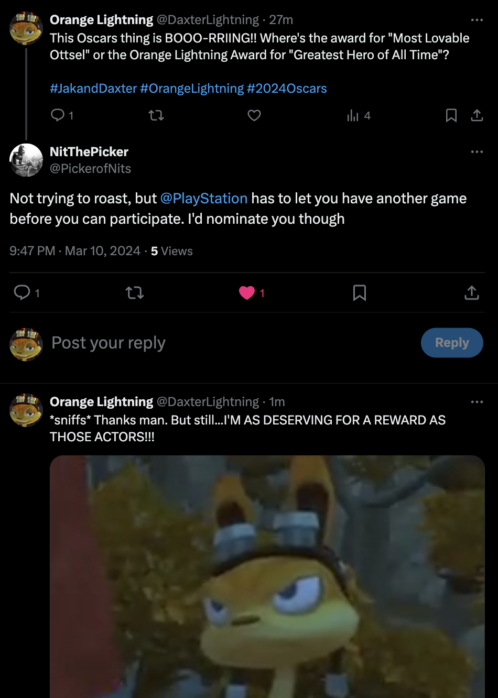
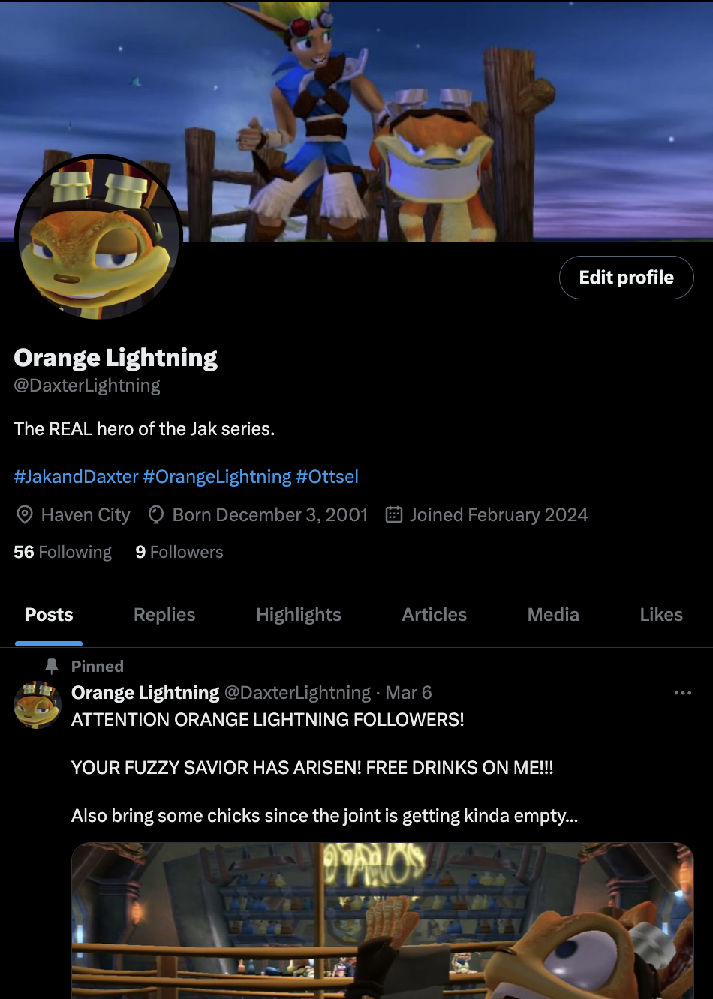

For this assignment, I have chosen the character of Daxter from the Jak and Daxter video game franchise. Daxter is a boisterous, loud-mouth character who is never afraid to speak his mind, much to the annoyance of his acquaintances and best friend Jak. Given the controversial nature of the website Twitter/X, I decided to create an account based on Daxter to see how the internet denizens of the site would react to his messages. As of the time I write this paragraph for this assignment, the Daxter twitter account holds 9 followers with 56 accounts being followed by "Daxter".

I began this intervention on February 26th, 2024. Initially, the tweets were nothing more than tongue and cheek references to other video game characters. By week 2, I began incorporating illustrations to breathe life into the ficticious account. This was to see how people would take into the Daxter character without assuming a bot is under the account. Everything has stayed copacetic, even as the messages became slightly more suggestive with Daxter making comments about various female characters from both his game and other franchises. From what I can gather, many people, including fans of the Jak and Daxter video game, very much enjoy the Daxter account. I believe a way to expand upon the interactions with fellow fans and online denizens is to add a story element to the account. As evident from one of my interactions with a fellow fan who used the character Bentley from the Sly Cooper franchise to banter with Daxter.
An intervention was staged on March 2, in which Daxter goes on rant after watching a seven year old video called "Death Battle". The "Death Battle" was between Ratchet and Clank, a rival gaming franchise, against Jak and Daxter. Needless to say, Jak and Daxter lost. Due to the unfavorbale outcome of the video, Daxter decided to make a Twitter thread to voice his grievances. After several tweets of non-stop ranting, Jak, Datxer's best friend and main protagonsit, interrupted Daxter's rant by trying to convince him to get off the computer. This ran from March 2 to March 4, with Daxter resuming the account once more.
I would love to continue this account for the final assessment to expand upon these ideas. I have become more intrigued by how people interact with character accounts, especially given how stagnent the Jak and Daxter franchise has become in later years. If there is one thing I can gather from activating this character account, is that Daxter's character will forever continue to touch the hearts of fans today.